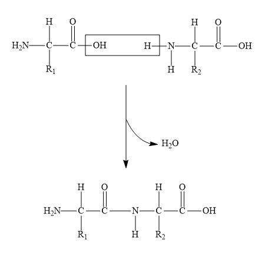
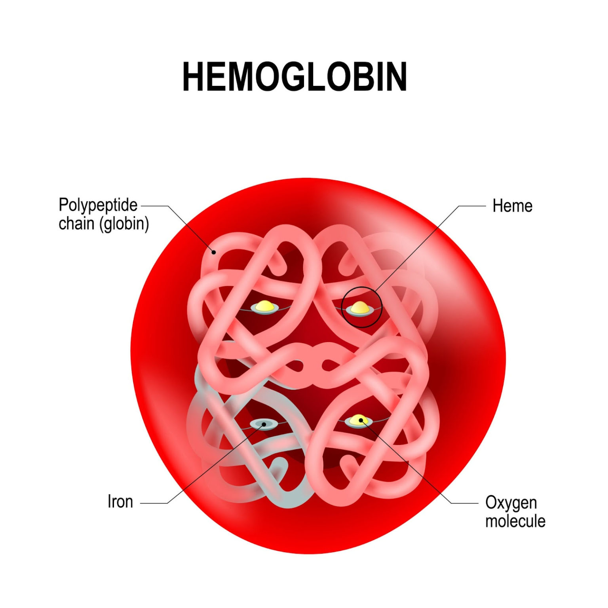
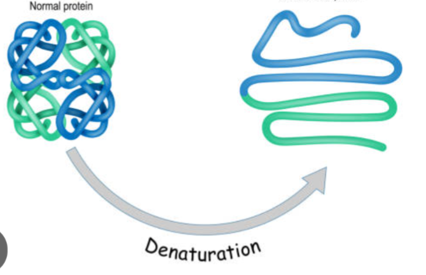
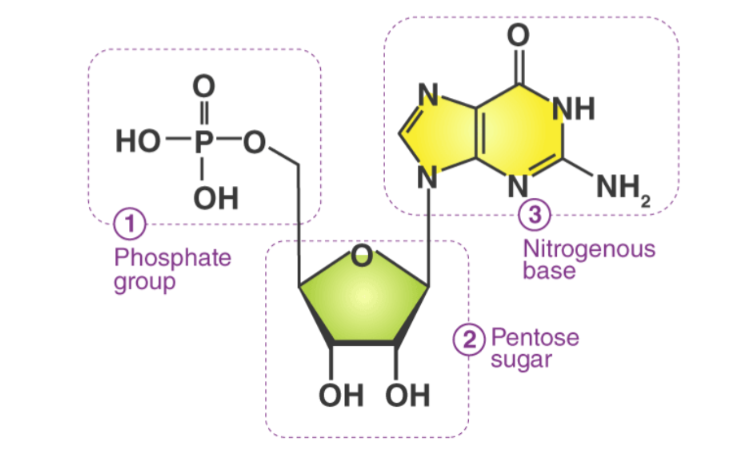
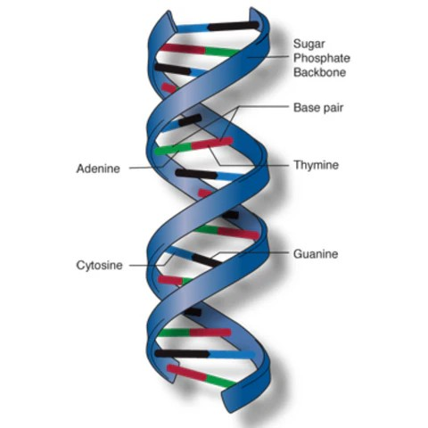
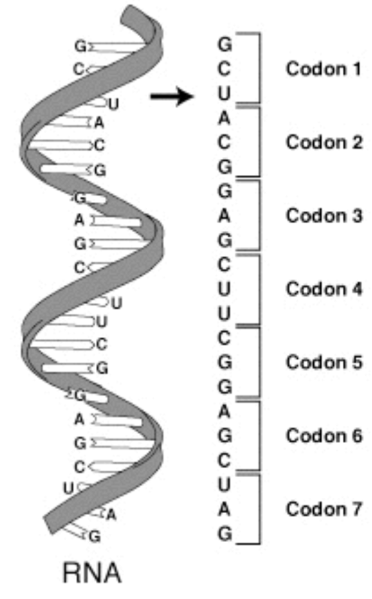
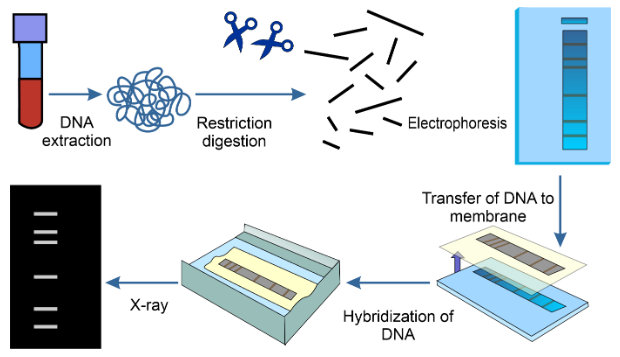
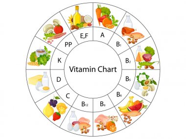

वे रासायनिक अणु जो जीवित कोशिकाओं में पाए जाते हैं और जीवन की सभी जैविक क्रियाओं (जैसे ऊर्जा प्राप्ति, वृद्धि, मरम्मत, वंशागति आदि) के लिए आवश्यक होते हैं। जैव अणु कहलाते है।
मुख्य जैव अणु और उनके उदाहरण इस प्रकार हैं—
- कार्बोहाइड्रेट
- ग्लूकोज़
- सुक्रोज़
- स्टार्च
- प्रोटीन
- हीमोग्लोबिन
- एंजाइम
- केराटिन
- वसा (लिपिड)
- घी
- तेल
- फैटी अम्ल
- न्यूक्लिक अम्ल
- DNA (डीएनए)
- RNA (आरएनए)

कार्बोहाइड्रेट के प्रकार
- मोनोसैकेराइड्स - सबसे सरल कार्बोहाइड्रेट जिन्हें आगे हाइड्रोलाइज नहीं किया जा सकता।
उदाहरण: ग्लूकोज़, फ्रुक्टोज़ तथा गैलेक्टोज़।
- डाईसेकेराइड - वे कार्बोहाइड्रेट की जिनमें 2 मोनोसैकराइड इकाइयाँ आपस में जुड़ी होती हैं डाईसेकेराइड कहलाते हैं। ये मीठे स्वाद वाले होते हैं और पानी में घुलनशील होते हैं।
उदाहरण:
सुक्रोज, माल्टोज, लैक्टोज
- ओलिगोसेकेराइड - वे कार्बोहाइड्रेट की जिनमें 3 से 10 मोनोसैकराइड इकाइयाँ आपस में जुड़ी होती हैं ओलिगोसेकेराइड कहलाते हैं। ये मीठे स्वाद वाले होते हैं और पानी में घुलनशील होते हैं।
उदाहरण: रिफिनोज
- पॉलीसैकेराइड्स - वे कार्बोहाइड्रेट जिनमें सैकड़ों से हज़ारों मोनोसैकराइड इकाइयाँ आपस मे जुड़ी रहती हैं पॉलीसैकेराइड्स कहलाते है।
ये आमतौर पर अघुलनशील और बेस्वाद होते हैं। इनका कार्य ऊर्जा संग्रह करना और संरचनात्मक सहारा देना।
उदाहरण: स्टार्च, ग्लाइकोजन, सेल्यूलोज
कार्बोहाइड्रेट का वर्गीकरण:
प्रकार | विवरण | उदाहरण |
मोनोसैकराइड | सरल शर्करा, एकल इकाई | ग्लूकोज़, फ्रुक्टोज़, गैलेक्टोज़ |
डाइसैकराइड | दो मोनोसैकराइड्स ग्लाइकोसाइडिक बंध से जुड़े | सुक्रोज़, लैक्टोज़, माल्टोज़ |
ओलिगोसैकराइड | 3–10 मोनोसैकराइड इकाइयाँ | रैफिनोज़ |
पॉलीसैकराइड | लंबी श्रृंखला वाली शर्करा | स्टार्च, ग्लाइकोजन, सेल्युलोज़ |
लैक्टोज़, माल्टोज़ तथा सुक्रोज़ के जल अपघटन से प्राप्त उत्पादों के नाम निम्न है।
- लैक्टोज़ → ग्लूकोज़ + गैलेक्टोज़
- माल्टोज़ → ग्लूकोज़ + ग्लूकोज़
- सुक्रोज़ → ग्लूकोज़ + फ्रुक्टोज़
जीव जंतुओं को ऊर्जा प्रदान करने वाली कार्बोहाइड्रेट की मुख्य इकाई ग्लूकोज़ (C₆H₁₂O₆) है।
कोशिकीय श्वसन के दौरान ग्लूकोज़ का ऑक्सीकरण होकर कार्बन डाइऑक्साइड, जल और ऊर्जा (ATP) प्राप्त होती है।
C₆H₁₂O₆ + 6O2 → 6CO2 + 6H2O + ATP

कोशिकाओं में श्वसन के दो अंतिम उत्पाद हैं:
- कार्बन डाइऑक्साइड (CO2)
- जल (H2O)
इसके अलावा ATP के रूप में ऊर्जा भी उत्पन्न होती है।
ATP (एडेनोसिन ट्राइफॉस्फेट) को कोशिका की ऊर्जा मुद्रा कहा जाता है।
इससे ADP (एडेनोसिन डाइफॉस्फेट) और Pi (अकार्बनिक फॉस्फेट) बनते हैं तथा ऊर्जा निकलती है।
ATP → ADP + Pi + ऊर्जा
इस प्रकार यह जीवित कोशिकाओं का तत्काल ऊर्जा प्रदान करता है।
जीवित जंतुओं में कार्बोहाइड्रेट के निम्न कार्य हैं।
- ग्लूकोज़ श्वसन के माध्यम से ऊर्जा देता है।
- जंतुओं में ग्लाइकोजन ऊर्जा का भंडार हैं।
- कार्बोहाइड्रेट प्रोटीन को ऊर्जा स्रोत बनने से रोकते हैं।
- राइबोज़ और डिऑक्सीराइबोज़ RNA और DNA के हिस्से हैं।
पौधों में कार्बोहाइड्रेट केनिम्न कार्य है।
- यह पौधों मे स्टार्च के रूप में संचित रहता है और भोजन भंडार का कार्य करता है।
- सेल्यूलोज़, जो एक पॉलीसैकेराइड है, पौधों की कोशिका भित्ति का संरचनात्मक घटक है।
- मुंह: लार का ऐमाइलेज स्टार्च को माल्टोज़ में तोड़ता है।
- छोटी आंत: अग्न्याशय का ऐमाइलेज स्टार्च को माल्टोज़ में आगे तोड़ता है।
- ब्रश बॉर्डर एंजाइम: माल्टेज़, लैक्टेज़ और सुक्रेज़ डाइसैकराइड्स को मोनोसैकराइड्स (ग्लूकोज़, फ्रुक्टोज़, गैलेक्टोज़) में बदलते हैं।
- अवशोषण: मोनोसैकराइड्स आंत की दीवार से रक्त में अवशोषित होकर कोशिकाओं तक पहुँचते हैं और ऊर्जा प्रदान करते हैं।
अमीनो अम्ल वे कार्बनिक यौगिक हैं जिनमें एक ही अणु में अमीनो समूह (–NH₂) और कार्बोक्सिल समूह (–COOH) दोनों उपस्थित होते हैं। ये प्रोटीन के मूल इकाई हैं।
उदाहरण:
- ग्लाइसिन
- एलैनिन

आवश्यक अमीनो अम्ल : वे अमीनो अम्ल जो मानव शरीर में नहीं बनते और भोजन से प्राप्त करने पड़ते हैं।
उदाहरण: वेलिन, ल्यूसीन, लाइसीन, ट्रिप्टोफैन।
अनावश्यक अमीनो अम्ल : वे अमीनो अम्ल जो मानव शरीर में संश्लेषित हो जाते हैं।
उदाहरण: ग्लाइसिन, एलैनिन, एस्पार्टिक अम्ल, ग्लूटामिक अम्ल
जब अमीनो अम्ल का अम्लीय समूह (-COOH) एक हाइड्रोजन आयन (H+) त्यागता है और क्षारीय समूह (–NH₂) उसी आयन को ग्रहण कर लेता है, तो एक द्विध्रुवीय आयन बनता है जिसे ज़्विटर आयन कहते हैं।
- एमाइड बंध : जब किसी कार्बोक्सिलिक अम्ल का –COOH समूह किसी एमीन (–NH₂) समूह से अभिक्रिया करता है और जल (H₂O) निकल जाता है, तो उनके बीच बनने वाला –CONH– बंध एमाइड बंध कहलाता हैं।
R–COOH+R′–NH₂⟶ R–CONH–R′+H₂O

- पेप्टाइड बंध : जब एक अमीनो अम्ल का –COOH समूह दूसरे अमीनो अम्ल के –NH₂ समूह से अभिक्रिया करता है और जल (H₂O) निकल जाता है, तो उनके बीच बनने वाला –CONH– बंध पेप्टाइड बंध कहलाता है।
यही बंध प्रोटीन के निर्माण में मूलभूत भूमिका निभाता है।

उदाहरण: हीमोग्लोबिन, केराटिन, इंसुलिन, कोलेजन।
प्रोटीन को उनकी आकृति और संरचना के आधार पर मुख्यतः दो प्रकारों में बाँटा जाता है –
- रेशेदार प्रोटीन : इनकी संरचना लम्बी, रेशे जैसी होती है। ये जल में अघुलनशील होते हैं। इनका मुख्य कार्य संरचनात्मक सहारा देना।
उदाहरण-
केराटिन (बाल, नाखून में)
कोलेजन (हड्डियों और स्नायु में)
मायोसिन (पेशियों में)
- गोलाकार प्रोटीन - इनकी संरचना गोलाकार या अंडाकार होती है। ये जल में घुलनशील होते हैं। इनका मुख्य कार्य जैव रासायनिक क्रियाओं का नियमन और नियंत्रण करना है।
उदाहरण-
हीमोग्लोबिन (ऑक्सीजन का परिवहन)
इन्सुलिन (रक्त शर्करा का नियंत्रण)
एंजाइम (जैव उत्प्रेरक)

तंतुमय प्रोटीन | गोलाकार प्रोटीन |
लम्बी धागेनुमा संरचना | गोलाकार संरचना |
जल में अघुलनशील | जल में घुलनशील |
संरचनात्मक एवं यांत्रिक सहारा प्रदान करते हैं | कार्यात्मक कार्य जैसे एन्ज़ाइम, हार्मोन, परिवहन |
उदाहरण: केराटिन, कोलेजन | उदाहरण: हीमोग्लोबिन, इंसुलिन |
प्रोटीन की कमी से होने वाले दो रोगों के नाम निम्न है।
- क्वाशिओर्कर
- मैरास्मस
- हीमोग्लोबिन – रक्त में ऑक्सीजन का परिवहन करता है।
- इंसुलिन – रक्त शर्करा का स्तर नियंत्रित करता है।
- केराटिन – बाल, नाखून एवं त्वचा का संरचनात्मक प्रोटीन है।
- कोलेजन – संयोजी ऊतकों को मजबूती प्रदान करता है।

कार्य:
- फेफड़ों से ऊतकों तक ऑक्सीजन पहुँचाना।
- ऊतकों से फेफड़ों तक कार्बन डाइऑक्साइड ले जाना।
- रक्त का pH संतुलित रखने में मदद करना।
Hb (डीऑक्सीहीमोग्लोबिन)+O2 ⇌ HbO₂ (ऑक्सिहीमोग्लोबिन)

हीमोग्लोबिन की कमी से रक्ताल्पता (Anemia) होती है, जिसके कारण थकान, कमजोरी और चेहरे की रंगत फीकी हो जाती है।
एंजाइम वे जैविक उत्प्रेरक होते हैं जो जीवित कोशिकाओं में होने वाली रासायनिक अभिक्रियाओं की गति को बढ़ाते हैं, जबकि स्वयं अपरिवर्तित रहते हैं।
अधिकांश एंजाइम प्रोटीन होते हैं और ये पाचन, श्वसन तथा चयापचय जैसी क्रियाओं में महत्वपूर्ण भूमिका निभाते हैं।

एंजाइम प्रोटीन से बने जैव-उत्प्रेरक होते हैं, जो जैव-रासायनिक अभिक्रियाओं की गति को बहुत बढ़ा देते हैं और स्वयं स्थायी परिवर्तन नहीं करते।
एंजाइम के औद्योगिक उपयोग:
- वस्त्र उद्योग में – ऐमाइलेज का उपयोग कपड़ों से स्टार्च हटाने में।
- खाद्य उद्योग में – इन्वर्टेज़ से टॉफी को नरम करने में, प्रोटीज़ से मांस को मुलायम करने में।
- दुग्ध उद्योग में – रेनिन का प्रयोग पनीर बनाने में।
- मद्य उद्योग में – ज़ाइमेज़ द्वारा शर्करा से ऐल्कोहल बनाने में।
प्रोटीन लंबे अमीनो अम्लों की श्रृंखलाओं से बने होते हैं जिन्हें पेप्टाइड बंध जोड़ते हैं। प्रोटीन की संरचना को चार स्तरों पर समझा जाता है:
- प्राथमिक संरचना - यह अमीनो अम्लों की सीधी श्रृंखला होती है। इसमें यह बताया जाता है कि कौन-सा अमीनो अम्ल किस क्रम में जुड़ा है। यह संरचना प्रोटीन के गुण और कार्य तय करती है।
- द्वितीयक संरचना - अमीनो अम्ल श्रृंखला हाइड्रोजन बंधों के कारण मोड़कर या कुंडल बनाकर व्यवस्थित हो जाती है।
मुख्य प्रकार:
α-हेलिक्स (alpha-helix)
β-शीट (beta-pleated sheet)
इससे प्रोटीन स्थिर हो जाता है। - तृतीयक संरचना - प्रोटीन की पूरी श्रृंखला 3-आयामी रूप ले लेती है। इसमें हाइड्रोजन बंध, आयनिक बंध, हाइड्रोफोबिक क्रियाएँ और डाईसल्फ़ाइड बंध शामिल होते हैं। यह प्रोटीन की सक्रिय संरचना होती है।
- चतुर्थक संरचना - जब एक से अधिक पॉलीपेप्टाइड श्रृंखलाएँ मिलकर कार्यात्मक प्रोटीन बनाती हैं, तो इसे चतुर्थक संरचना कहते हैं।
उदाहरण: हीमोग्लोबिन (जिसमें 4 पॉलीपेप्टाइड श्रृंखलाएँ होती हैं)।

प्रोटीन की α-हेलिक्स संरचना में स्थायित्व अणु-अंतर्गत हाइड्रोजन बंध से प्राप्त होता है, जो एक अमीनो अम्ल के >C=O समूह और श्रृंखला में चौथे अमीनो अम्ल के –NH समूह के बीच बनता है।
प्रोटीन के चार मुख्य स्रोत निम्नलिखित हैं –
- दूध एवं दुग्ध उत्पाद – दूध, दही, पनीर, छाछ
- दालें और अनाज – मूंग, मसूर, चना, राजमा, सोयाबीन
- मांसाहारी पदार्थ – मछली, अंडा, मांस
- मेवे और बीज – मूंगफली, बादाम, अखरोट, कद्दू के बीज
प्रोटीन के निम्न महत्व है।
- कोशिकाओं एवं ऊतकों के संरचनात्मक घटक।
- एन्ज़ाइम, जो सभी जैव-रासायनिक अभिक्रियाओं को नियंत्रित करते हैं।
- हार्मोनल कार्य (जैसे – इंसुलिन)।
- अणुओं का परिवहन (जैसे – हीमोग्लोबिन द्वारा ऑक्सीजन का परिवहन)।
- रक्षा कार्य (जैसे – एंटीबॉडीज़)।
जब ऊष्मा, प्रबल अम्ल/क्षार या रासायनिक अभिकर्मकों के प्रभाव से प्रोटीन की प्राकृतिक संरचना नष्ट हो जाती है और इसकी जैविक सक्रियता समाप्त हो जाती है, तो इस प्रक्रिया को प्रोटीन का विकृतिकरण कहते हैं।

α-अमीनो अम्ल | प्रोटीन |
सरल अणु, जिसमें एक ही कार्बन पर अमीनो और कार्बोक्सिल समूह जुड़ा होता है। | अनेक अमीनो अम्लों के पेप्टाइड बंध से बने विशाल अणु। |
कम आणविक भार। | अधिक आणविक भार। |
उदाहरण: ग्लाइसिन, एलैनिन। | उदाहरण: हीमोग्लोबिन, इंसुलिन। |
न्यूक्लियोटाइड क्या होते हैं –
न्यूक्लियोटाइड न्यूक्लिक अम्लो की संरचनात्मक एवं कार्यात्मक इकाइयाँ होते हैं।

प्रत्येक न्यूक्लियोटाइड तीन घटकों से मिलकर बना होता है –
फॉस्फेट समूह-
- फास्फोरिक अम्ल (DNA में)
- ऑर्थोफॉस्फेट समूह (RNA में)
पेंटोज शर्करा
- डीऑक्सी राइबोज (DNA में)
- राइबोज (RNA में)
नाइट्रोजनी आधार
- प्यूरिन (Adenine, Guanine)
- पाइरीमिडीन (Cytosine, Thymine – DNA में, Uracil – RNA में)
न्यूक्लिक अम्ल जटिल जैव-अणु होते हैं, जो न्यूक्लियोटाइड से बने होते हैं अतः इन्हें पोलीन्यूक्लियोटाइड भी कहते है। ये जीवों में आनुवंशिक सूचना का भंडारण और स्थानांतरण करते हैं।
इनके दो प्रकार हैं – DNA और RNA
कार्य:
- आनुवंशिक सूचना का भंडारण व स्थानांतरण (DNA में)
- प्रोटीन संश्लेषण (RNA में)
यह एक डबल हेलिक्स न्यूक्लिक अम्ल है। यह सभी जीवों में अनुवांशिक पदार्थ है। इसे जीवन का ब्लूप्रिंट कहा जाता है।
DNA का पूरा नाम- डीऑक्सीराइबोन्यूक्लिक अम्ल है।

DNA का रासायनिक संगठन
1. फॉस्फोरिक अम्ल
2. डिऑक्सीराइबोज शर्करा
3. नाइट्रोजनयुक्त क्षारक (A, G, C, T)
DNA के कार्य
- यह पीढ़ी दर पीढ़ी लक्षणों का स्थानांतरण करता है।
- प्रोटीन निर्माण की सूचना को कोडिंग के रूप मे संग्रहित करने मे।
यह एक एकल सूत्री न्यूक्लिक अम्ल है। सभी यूकैरियोट्स में प्रोटीन संश्लेषण का कार्य करता है।
RNA का पूरा नाम – राइबोन्यूक्लिक अम्ल

RNA का रासायनिक संगठन
- ऑर्थोफॉस्फेट समूह
- राइबोज शर्करा
- नाइट्रोजनयुक्त क्षारक (A, G, C, U)
RNA का मुख्य कार्य — जीवो मे प्रोटीन संश्लेषण करना।
2022/23
DNA | RNA |
पूरा नाम | डिऑक्सीराइबोन्यूक्लिक अम्ल | राइबोन्यूक्लिक अम्ल |
शर्करा | डिऑक्सीराइबोज़ | राइबोज़ |
क्षारक | A, G, C, T (थाइमिन उपस्थित) | A, G, C, U (युरैसिल उपस्थित, थाइमिन अनुपस्थित) |
संरचना | द्वि-सूत्री हेलिक्स | प्रायः एकल-सूत्री |
कार्य | आनुवंशिक सूचना संग्रहित करता है | सूचना को प्रोटीन संश्लेषण तक पहुँचाता है |
डीएनए फिंगरप्रिंटिंग एक तकनीक है, जिसके द्वारा किसी व्यक्ति की पहचान उसके DNA अनुक्रम के विशेष पैटर्न के आधार पर की जाती है।

महत्त्व:
- अपराध विज्ञान में अपराधियों की पहचान के लिए।
- पितृत्व परीक्षण में।
- आनुवंशिक रोगों की पहचान में।
- जैव विविधता अध्ययन व संरक्षण में।
विटामिन ऐसे कार्बनिक यौगिक हैं जिनकी बहुत कम मात्रा शरीर की सामान्य वृद्धि, सही कार्यप्रणाली और रोगों से बचाव के लिए आवश्यक होती है। ये ऊर्जा नहीं देते लेकिन चयापचय के लिए जरूरी होते हैं।

मानव शरीर में विटामिन की प्रमुख भूमिकाएँ
- विटामिन शरीर की सही बढ़त में मदद करते हैं, खासकर बच्चों की शारीरिक और मानसिक वृद्धि के लिए जरूरी हैं।
- विटामिन शरीर की रोग प्रतिरोधक शक्ति बढ़ाते हैं, जिससे हम बीमारियों से लड़ पाते हैं।
- ये भोजन को पचाने, उसे शरीर में अवशोषित करने और सही तरह से उपयोग करने में सहायता करते हैं।
- विटामिन त्वचा, आँखों, हड्डियों और दाँतों को मजबूत व स्वस्थ रखते हैं।
विटामिन दो वर्गों में विभाजित होते हैं।
- वसा में घुलनशील विटामिन जैसे A/D/E/K
- जल में घुलनशील विटामिन जैसे B/C
वसा में घुलनशील विटामिन यकृत और वसा ऊतक में संग्रहित होते है।
विटामिन A (रेटिनॉल) :
स्रोत: गाजर, दूध, मक्खन, मछली का तेल।
कार्य -
- सामान्य दृष्टि बनाए रखता है।
- त्वचा और श्लेष्म झिल्लियों को स्वस्थ रखता है।
हिनताजन्य रोग - रतौंधी
विटामिन D (आग्रेस्टॉल)
स्रोत-विटामिन D का प्रमुख स्रोत सूर्य का प्रकाश है, इसलिए शरीर इसे नियमित रूप से निर्मित करता रहता है और इसे भोजन की तरह लंबे समय तक संग्रहित करने की आवश्यकता कम होती है।
- कैल्शियम और फॉस्फोरस के अवशोषण में सहायक।
- हड्डियों और दाँतों को मजबूत करता है।
हिनताजन्य रोग - रिकेट्स
विटामिन E (टोकॉफरोल)
स्रोत:
- एंटीऑक्सीडेंट का कार्य करता है।
- कोशिकाओं की झिल्लियों को क्षति से बचाता है।
हिनताजन्य रोग - बांझपन
विटामिन K (फिनोकैनन)
स्रोत: हरी पत्तेदार सब्जियाँ, अनाज एवं दालें, तेल,आंतों की जीवाणु भी थोड़ी मात्रा में विटामिन K का संश्लेषण करते हैं।
- रक्त के थक्के जमने में सहायक।
- अत्यधिक रक्तस्राव को रोकता है।
हिनताजन्य रोग - रक्त का थक्का न जमना
यह शरीर मे संग्रहित नहीं होते अतः इन्हें नियमित लेना आवश्यक होता है।
विटामिन B Complex
विटामिन B
का प्रकार स्रोत कार्य हीनता जन्य रोग
B₁ (थायमिन) | साबुत अनाज, मूंगफली, दालें, अंकुरित अनाज | स्नायु तंत्र को सही रखना, कार्बोहाइड्रेट का अपघटन | बेरी-बेरी |
B₂ (राइबोफ्लेविन) | दूध, अंडा, हरी सब्ज़ियाँ, मछली | ऊर्जा उत्पादन, त्वचा और आँखों का स्वास्थ्य | एरिबोफ्लेविनोसिस (जीभ व होंठों में सूजन, आँखों में जलन) |
B₃ (नायसिन) | मांस, मछली, मूंगफली, अनाज | कोशिकाओं को ऊर्जा प्रदान करना | पेलेग्रा (त्वचा रोग, दस्त, मानसिक असामान्यता) |
B₅ (पैंटोथेनिक अम्ल) | अंडा, दूध, मटर, शकरकंद | कोएंजाइम A का निर्माण, वसा एवं प्रोटीन का मेटाबॉलिज़्म | दुर्लभ – थकान, सिरदर्द |
B₆ (पाइरीडॉक्सिन) | केले, दूध, अंडे, मछली | अमीनो अम्लों का चयापचय, हीमोग्लोबिन निर्माण | एनीमिया, चिड़चिड़ापन |
B₇ (बायोटिन) | अंडे की जर्दी, सोयाबीन, मूंगफली, पालक | फैटी अम्ल का निर्माण, ऊर्जा चयापचय | डर्माटाइटिस, बाल झड़ना |
B₉ (फोलिक अम्ल) | हरी पत्तेदार सब्ज़ियाँ, संतरा, अंकुरित अनाज | DNA एवं RNA निर्माण, लाल रक्त कोशिकाओं का निर्माण | मेगालोब्लास्टिक एनीमिया, भ्रूण में न्यूरल ट्यूब दोष |
B₁₂ (कोबालामिन) | दूध, अंडा, मांस, मछली | लाल रक्त कोशिकाओं का निर्माण, स्नायु तंत्र का कार्य | पर्निशियस एनीमिया |
विटामिन C (एस्कोरबिक अम्ल):
यह रक्त में घुलकर मूत्र के साथ बाहर निकल जाते हैं तथा शरीर में संचित नहीं होता है इसलिए इसे प्रतिदिन आहार से लेना आवश्यक होता है।
स्रोत: खट्टे फल (संतरा, नींबू), आंवला, टमाटर, हरी पत्तेदार सब्ज़ियाँ।
कार्य -
- घाव भरने
- रोग प्रतिरोधक क्षमता बढ़ाने
- स्वस्थ मसूड़ों
हिनताजन्य रोग - विटामिन C की कमी से स्कर्वी रोग होता है, जिसमें मसूड़ों से खून आता है, दाँत हिलने लगते हैं और घाव जल्दी नहीं भरते।
विटामिन A: सामान्य दृष्टि, वृद्धि और स्वस्थ त्वचा के लिए आवश्यक।
स्रोत: गाजर, दूध, मक्खन, मछली का तेल।
विटामिन C: घाव भरने, रोग प्रतिरोधक क्षमता बढ़ाने और स्वस्थ मसूड़ों के लिए आवश्यक।
स्रोत: खट्टे फल (संतरा, नींबू), आंवला, टमाटर, हरी पत्तेदार सब्ज़ियाँ।
स्विटामिन A के चार स्रोत निम्न है।
- गाजर
- दूध
- मक्खन
- मछली का तेल
रोग | किस विटामिन की कमी से |
रक्त का थक्का न जमना | विटामिन K |
रतौंधी | विटामिन A |
एनीमिया | विटामिन B₁₂ |
रिकेट्स | विटामिन D |
(i) विटामिन A
- सामान्य दृष्टि बनाए रखता है।
- त्वचा और श्लेष्म झिल्लियों को स्वस्थ रखता है।
(ii) विटामिन D
- कैल्शियम और फॉस्फोरस के अवशोषण में सहायक।
- हड्डियों और दाँतों को मजबूत करता है।
(iii) विटामिन E
- एंटीऑक्सीडेंट का कार्य करता है।
- कोशिकाओं की झिल्लियों को क्षति से बचाता है।
(iv) विटामिन K
- रक्त के थक्के जमने में सहायक।
- अत्यधिक रक्तस्राव को रोकता है।
उत्तर रक्त के थक्के बनने के लिए विटामिन K जिम्मेदार होता है।
विटामिन C (एस्कॉर्बिक अम्ल) जल में घुलनशील विटामिन है। अतः यह रक्त में घुलकर मूत्र के साथ बाहर निकल जाते हैं तथा शरीर में संचित नहीं होता है इसलिए इसे प्रतिदिन आहार से लेना आवश्यक होता है।
विटामिन D का प्रमुख स्रोत सूर्य का प्रकाश है, इसलिए शरीर इसे नियमित रूप से निर्मित करता रहता है और इसे भोजन की तरह लंबे समय तक संग्रहित करने की आवश्यकता कम होती है।
प्रोटीन की मूल संरचनात्मक और कार्यात्मक इकाई है:
a) अमीनो अम्ल b) वसीय अम्ल
c) न्यूक्लियोटाइड d) ग्लूकोज़
उत्तर: अमीनो अम्ल
RNA में उपस्थित शर्करा है:
a) राइबोज b) डीऑक्सीराइबोज़
c) ग्लूकोज़ d) फ्रुक्टोज़
उत्तर: राइबोज़
निम्नलिखित में से कौन एक डाइसैकेराइड है?
a) ग्लूकोज b) माल्टोज़
c) फ्रुक्टोज़ d) राइबोज़
उत्तर: माल्टोज़
एंजाइम रासायनिक रूप से:
a) लिपिड b) प्रोटीन
c) कार्बोहाइड्रेट d) विटामिन
उत्तर: प्रोटीन
निम्नलिखित में से कौन एक पॉलीसैकेराइड है?
a) सुक्रोज b) लैक्टोज
c) स्टार्च d) फ्रुक्टोज
उत्तर: स्टार्च
न्यूक्लिक अम्लों की मोनोमर इकाइयाँ हैं:
a) इंसुलिन
b) हीमोग्लोबिन
c) न्यूक्लियोटाइड
d) ग्लाइकोजन
उत्तर: न्यूक्लियोटाइड
दो अमीनो अम्लों के बीच के बंधन को कहते हैं:
a) ग्लाइकोसिडिक बंधन
b) पेप्टाइड बंधन
c) हाइड्रोजन बंधन
d) फॉस्फोडाइएस्टर बंधन
उत्तर: पेप्टाइड बंधन
कौन सा विटामिन जल में घुलनशील है?
a) विटामिन A
b) विटामिन D
c) विटामिन B
d) विटामिन K
उत्तर: विटामिन B
फल शर्करा के रूप में जाना जाने वाला कार्बोहाइड्रेट है:
a) ग्लूकोज
b) सुक्रोज
c) फ्रुक्टोज
d) लैक्टोज
उत्तर: फ्रुक्टोज
पौधे की कोशिका भित्ति में मुख्य संरचनात्मक पॉलीसैकेराइड है:
a) सेल्यूलोज
b) ग्लाइकोजन
c) स्टार्च
d) पेक्टिन
उत्तर: सेल्यूलोज
निम्नलिखित में से कौन सा प्रोटीन नहीं है?
a) इंसुलिन
c) केराटिन
उत्तर: ग्लाइकोजन
DNA का अर्थ है
a) डीऑक्सीराइबोन्यूक्लिक अम्ल
b) डीऑक्सीराइबोप्रोटीन अम्ल
c) डाइकार्बोक्सिलिक न्यूक्लिक अम्ल
d) इनमें से कोई नहीं
उत्तर: डीऑक्सीराइबोन्यूक्लिक अम्ल
निम्नलिखित में से कौन सा फेहलिंग परीक्षण सकारात्मक देता है?
c) माल्टोज
d) a और c दोनों
उत्तर: a और c दोनों
निम्नलिखित में से कौन सा अपचायक शर्करा है?
d) सेल्यूलोज
उत्तर: ग्लूकोज
बालों और नाखूनों में कौन सा प्रोटीन पाया जाता है?
a) एल्बुमिन
b) कोलेजन
d) केसीन
उत्तर: केराटिन
- सबसे सरल कार्बोहाइड्रेट _______ है।
उत्तर: ग्लूकोज़
- प्रोटीन _______ के बहुलक होते हैं।
उत्तर: अमीनो अम्ल
- डीएनए में मौजूद शर्करा _______ होती है।
उत्तर: डीऑक्सीराइबोज़
- वसा, वसीय अम्लों और _______ के एस्टर होते हैं।
उत्तर: ग्लिसरॉल
- स्टार्च को माल्टोज़ में बदलने वाला एंजाइम _______ है।
उत्तर: एमाइलेज
सत्य या असत्य
- प्रोटीन वसीय अम्लों के बहुलक होते हैं। - असत्य
- सेल्यूलोज़ एक पॉलीसैकेराइड है। - सत्य
- विटामिन D एक वसा में घुलनशील विटामिन है। - सत्य
- आरएनए में डीऑक्सीराइबोज़ शर्करा होती है। - असत्य
- एंजाइम जैव रासायनिक अभिक्रियाओं को तेज़ करते हैं। - सत्य
निम्नलिखित का मिलान करें
स्तंभ A स्तंभ B
1. डीएनए a. जैविक उत्प्रेरक
2. ग्लूकोज़ b. मोनोसैकेराइड
3. माल्टोज़ c. डाइसैकेराइड
4. स्टार्च d. पॉलीसैकेराइड
5. एंजाइम e.आनुवंशिक पदार्थ
1 – e
2 – b
3 – c
4 – d
5 – a